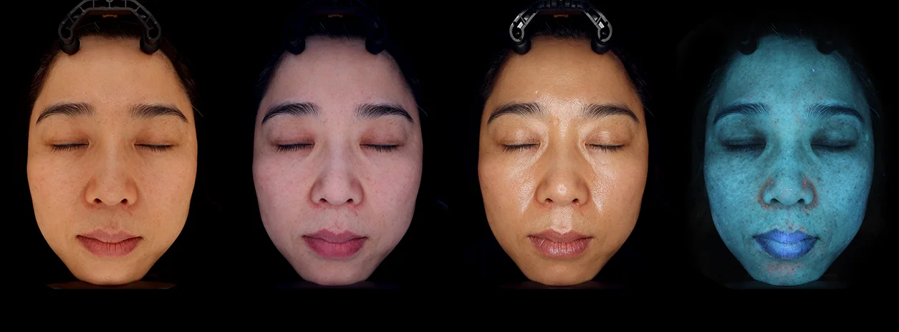
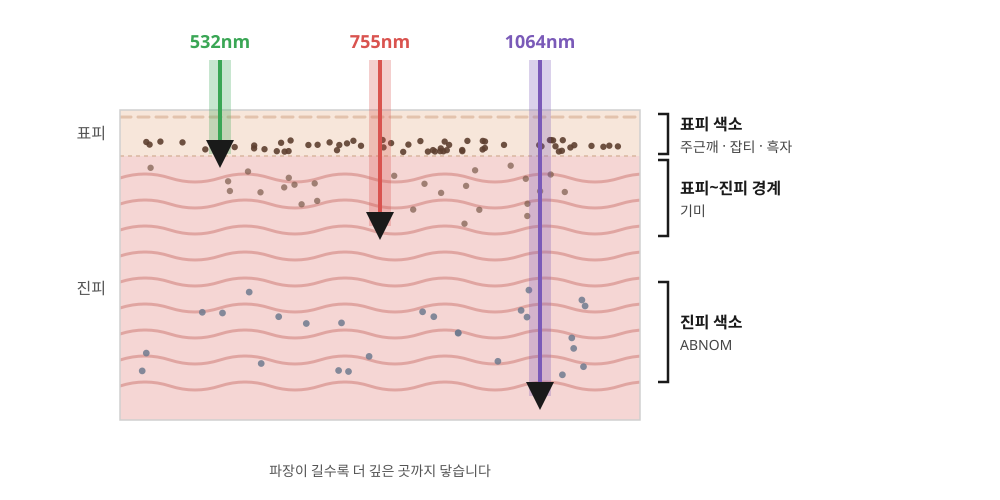

얕은 색소 · 표피
532nm
멜라닌에 아주 잘 흡수되는 짧은 파장입니다. 피부 표면 가까이에 있는 진한 색소를 정확하게 겨냥합니다.
이런 색소에 · 주근깨, 잡티, 흑자
시술 후 · 미세 딱지 약 2주, 시술 부위에 듀오덤 부착
큐마스터플러스
홈 > 피부미용 > 색소 > 기미·흑자·잡티·색소
532·755·1064nm, 색소에 맞춰 고르는 세 가지 파장
PIGMENT
기미, 흑자, 주근깨, 잡티는 모두 갈색 반점처럼 보이지만 색소가 자리한 깊이와 성질이 다릅니다. 얕은 곳의 색소에는 짧은 파장이, 깊은 곳의 색소에는 긴 파장이 잘 닿습니다.
갈창림한의원은 532nm, 755nm, 1064nm 세 가지 파장을 갖추고, 야누스프로로 색소의 종류와 깊이를 확인한 뒤 그에 맞는 파장과 세기로 시술합니다.
같은 갈색 반점이라도 깊이와 종류에 따라 치료가 달라야 합니다.

WAVELENGTH
파장이 짧을수록 얕은 색소에, 길수록 깊은 색소에 잘 닿습니다.

얕은 색소 · 표피
멜라닌에 아주 잘 흡수되는 짧은 파장입니다. 피부 표면 가까이에 있는 진한 색소를 정확하게 겨냥합니다.
이런 색소에 · 주근깨, 잡티, 흑자
시술 후 · 미세 딱지 약 2주, 시술 부위에 듀오덤 부착
큐마스터플러스
표피 색소
멜라닌 흡수율이 높으면서 532nm보다 조금 더 깊이 들어가는 파장입니다. 경계가 뚜렷한 표피 색소에 사용합니다.
이런 색소에 · 흑자, 주근깨, 잡티
시술 후 · 미세 딱지 약 1주
악센토N
깊은 색소 · 진피
가장 깊이 들어가는 파장으로, 피부 표면 자극은 줄이면서 깊은 곳의 색소에 닿습니다. 낮은 세기로 여러 번 나눠 조사하는 토닝에도 사용합니다.
이런 색소에 · 기미, ABNOM, 칙칙한 피부톤 · 미백
시술 후 · 딱지 없음
큐마스터플러스 · 악센토N
| 색소 | 깊이 | 주로 쓰는 파장 | 접근 방법 |
|---|---|---|---|
| 기미 | 표피 ~ 진피 | 1064nm | 자극에 예민해 낮은 세기로 여러 번 나누어 관리합니다. |
| 흑자 | 표피 | 532nm · 755nm | 경계가 뚜렷한 색소를 정확히 겨냥해 시술합니다. |
| 주근깨 · 잡티 | 표피 | 532nm · 755nm | 얕은 색소에 잘 흡수되는 파장으로 시술합니다. |
| ABNOM | 진피 | 1064nm | 깊은 곳의 색소라 긴 파장으로 간격을 두고 여러 번 시술합니다. |
| 칙칙한 피부톤 | 피부 전체 | 1064nm | 낮은 세기로 얼굴 전체를 고르게 관리하는 미백 토닝을 합니다. |
EQUIPMENT

532nm · 1064nm
아주 짧은 순간에 강한 에너지를 내는 큐스위치 Nd:YAG 레이저입니다. 색소 입자를 잘게 부수는 방식으로 기미, 흑자, ABNOM 등 색소 치료와 미백 토닝에 사용합니다.
갈창림한의원 대표원장 · 큐마스터플러스 Key Doctor

755nm · 1064nm
알렉산드라이트와 엔디야그, 두 가지 파장을 갖춘 레이저입니다. 표피의 흑자와 주근깨 등 경계가 뚜렷한 색소에 사용합니다.
PROCESS
CAUTION
※ 필요한 시술 횟수와 효과는 색소의 종류와 깊이, 피부 상태에 따라 개인차가 있습니다.
FAQ
기미는 자극에 예민해 한 번에 강하게 없애기보다 낮은 세기로 여러 번 나누어 관리합니다. 자외선과 호르몬 등의 영향으로 다시 생길 수 있어, 시술 후에도 자외선 차단과 꾸준한 관리가 중요합니다.
경계가 뚜렷한 표피 색소는 비교적 적은 횟수로 변화를 보는 경우가 많습니다. 색소의 진하기와 깊이에 따라 다르니, 분석 후 예상 횟수를 안내해 드립니다.
532nm·755nm 시술 직후에는 색소가 위로 올라오며 일시적으로 진해 보이고 얇은 딱지가 생길 수 있습니다. 대부분 딱지가 떨어지면서 옅어지며, 오래 지속되면 한의원으로 연락해 주세요.
주로 광대 양쪽에 회갈색으로 나타나는 진피 색소로, 기미와 비슷해 보여 헷갈리기 쉽습니다. 색소가 깊이 있어 긴 파장으로 간격을 두고 여러 번 시술합니다.
가능합니다. 1064nm로 얼굴 전체를 낮은 세기로 고르게 관리하는 미백 토닝으로 칙칙한 피부톤을 관리할 수 있습니다.